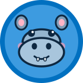

Azure ML 기반 이미지 분류 서비스
- 역할: 데이터 정제 · 모델 학습 파이프라인 구성
- 사용 기술: Python, Azure ML, 전이학습
- 결과: 학습부터 배포까지 Azure ML 파이프라인으로 자동화

클라우드 위에서 AI 서비스를 만들고 운영하는 엔지니어가 되고 싶습니다.
생성형 AI 도구로 업무를 자동화해 보며 AI 서비스 개발에 관심을 갖게 되었습니다. SeSAC Microsoft AI 엔지니어 과정에서 Python과 Azure로 머신러닝 모델과 RAG 챗봇을 직접 만들었습니다. GitHub로 코드를 관리하고 팀과 공유하며 함께 성장하는 엔지니어가 되겠습니다.